BIO
 UKR
UKR RU
RUPerformance with the Symphony Orchestra conducted by Nikolai Orach. Lviv.
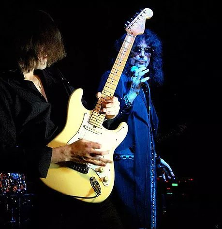...Beatles...Tribute...
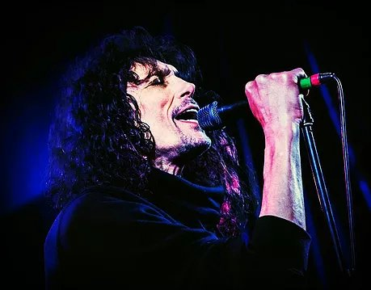Between the performans...
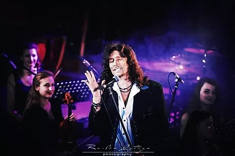With Royal Orchestra... 2015... Lviv
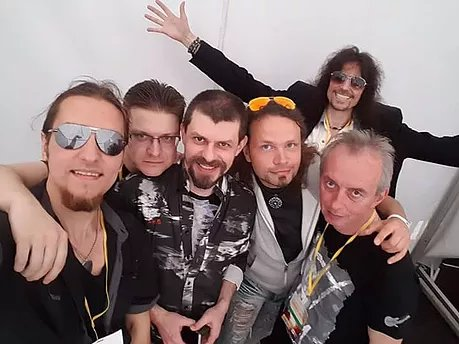"GALAXY" at the festival "Garden Music" 2015
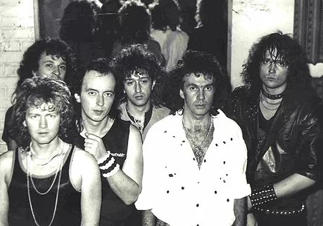"Galaxy" - the first structure, 1987
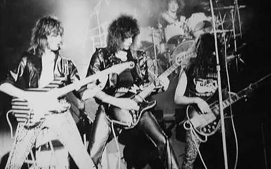
"GALAXY", 1992. American composition
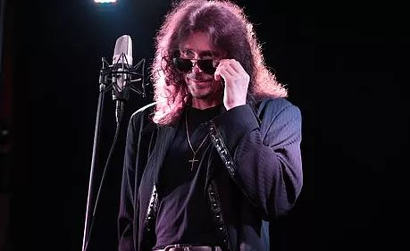
Between the shooting ...
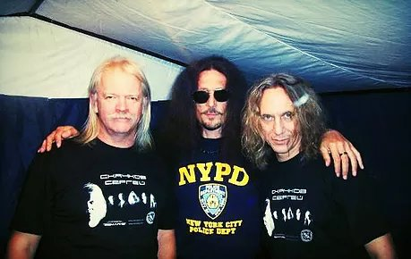With Sergey Skachkov - "Zemlyane" and Oleg Khovrin
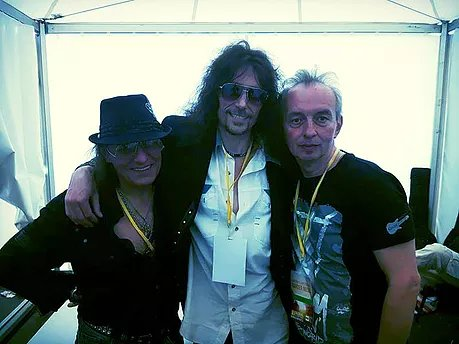With Sergey Chenturiya and vyacheslav Vasilenko
With Enver Ismailov
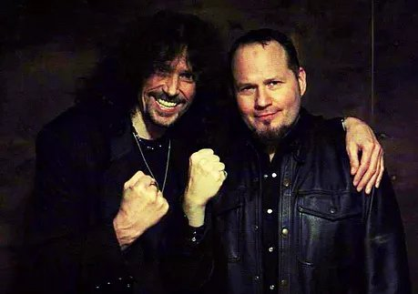Slava Sinchuk and Tim (Ripper) Owens is the vocalist of the bands "Judas Priest" - at the joint performance of 2014
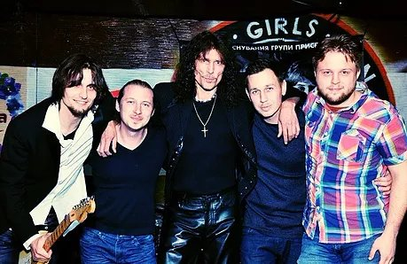With SINCHUK BAND...
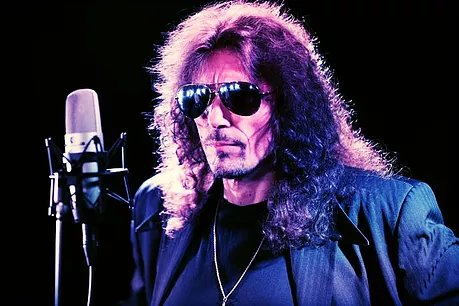On the record-stidio...
Karina Plai
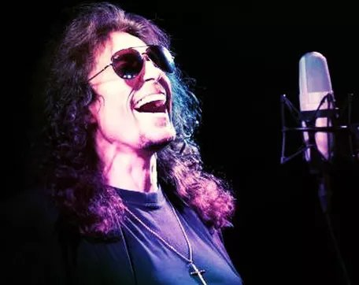" Absolutely brilliant. "
- Bob Harris BBC Radio 2
"" Galaxy "Sinchuk - a great band, I'm glad that the guys are back together, I will come to you on" Galaxy-ROCK ".
- Phil Collins
Vyacheslav Sinchuk -
is a fate-musician, singer and composer, guitarist, leader of group " Galaxy", participant of groups " Favourites" and "Red маки". It was born on January, 6 1964 in Lviv in Ukrainian-Scottish family. The grandfather of Slava intermingled with a grandchild in English, and a father taught Slava to music from the earliest childhood. Yet being a schoolboy Slava finished five classes of musical school on the class of bayan, and also wrestled, by a sambo, Karate and gave great expectations in professional sporting circles... Collected the first group Glory yet studying senior classes, naming her "Teen Gentleman". Guys played the cover-versions popular at that time songs of "Deep Purple", " Nazareth", "Black Sabbath" etc. Slava was even nicknamed " by Nazareth", that became his second name for a long time. Because at that time to sing the songs of the above-stated groups was considered a how hardly not crime, a group was quite often pursued by unpleasant conversations with the management of school and even with law enforcement authorities, especially as every performance of group closed by the broken chairs in gymnasia, the broken windows etc. Exactly on this account Slava began to write the first own songs... Upon termination of school of trainer Slava designated to him the brilliant future in sport and in every way tried to incline him to entering Institute of Physical Education, but Slava had the plans. He constantly listened a fate music, paid by then considerable money for records from plates and studied to playing the guitar. Once right after completion of school long-haired cute guys very look like "brandname rock-man" dropped in on to Slava. Invited on a rehearsal and asked he would not like to sing with them. Slava, disbelieving that in the USSR there can be musicians of class of "Deep Purple" or " Nazareth" refused.But guys appeared persistent and in one of days simply arrived on a machine and drove Slava on the rehearsal. Certainly, to the higher indicated groups they did not slightly drag as far as, but,on the view of Slava, it was somewhere close. So Slava Sinchuk got in a fate-command " Favourites". Guest performances, concerts and very new life, began. A group carried out the songs, on style healthily reminding "Deep Purple", therefore hardly handed over the program " to Artistic advice decorated" with an order and not understanding in роке, coming running to the every family cunnings and naming the authors of the songs of the known soviet composers and poets, only therefore getting permission on tour activity.Later Slava was invited in a group " Cruise", but a fate bossed so, that directed to Moscow for work in " Cruise", Slava got in a group "Red Маки". There Slava became acquainted with a guitarist and composer Seva Tatarenko, and after some time из" Maki" went away together with him. A group " Galaxy" was so born. GALAXY " Galaxy" became one of the most popular and known groups the USSR, collecting with unchanging full houses stadiums and Sport Palaces on all Union. Guys worked on a wear, sometimes for 4 concerts in a day. It was writtenin and published four albums on all-union " Melody", they were grasped by fantastic success and sales through this country. This was time of unreal popularity, highly sought, but also complete physical and moral exhaustion. The first composition disintegrates........................... Galaxy remains with Sinchuk. A bit resting and coming round, Slava searches musicians the those best persistently, that would arrange him. New " American" Galaxy was so born - " GALAXY". Further rehearsals of new material and record of the first in the USSR album (on the same Melody) in English language and success of this album are a few reediting of drawing. No wonder that a group" " is taken under wing by a producer Ovanes Melik-Pashaev, signs a contract with a group, and GALAXY departs in the USA. History in few words happened so: Americans arriving to buy the best group at Ovanes went by a hall where Galaxy rehearsed.Hearing musicians they simply said :"We buy IT"!. Here so a producer Ovanes Melik-Pashaev drove Slava and GALAXY in the USA, where five years a group gave concerts and came forward on different festivals, and also in legendary clubs. In America " Galaxy" wrote down another English-language album, author of all songs of that is vyacheslav Sinchuk (texts, music, arrangement). In 1996 on results questioning of magazine of "New Metal" Slava Sinchuk occupied 8 place in the first ten the best the rock-singers of the World. This was honest and real victory. A group staggered the sceptically adjusted Americans, moreover, they named " GALAXY" music, passing ahead time. The brightly expressed style and professionalism of very tall class could not not notice other producers are serious players of the American show-business market. "Bad Company", "Motley crue", "Steppen Wolf", Donna Sammer - all need STIV SINCHUK, as Americans named Slava, but not group Galaxy, that on a that moment became a Unwanted competitor local for rock-bands. Development was not given a group, and Slava with his brilliant data was torn by installments and overbalanced in other projects. An extremely difficult choice got up before a young artist. And Slava acted unexpectedly for all: as all guys of American Galaxy determined on staying in America, Slava alone goes to Ukraine to heave up rock music for itself on Motherland and again to create it legendary GALAXY, the Ukrainian rock band....................................In 1996 the inspired by this idea of Sinchuk returns on Ukraine and ....gets in the completely another musical measuring... where only only the young Ukrainian stage complicit on фольк- and поп- basis begins to develop. The melodious HARD- end of HAVY- was considered at that time and continues to be considered to this day Unformat. In the aspiration to prove, that Ukrainian rock music can collect stadiums, Slava teams up with composition of the first Galaxy and guys give a legendary concert "Galaxy is FATE", where invite the best rock bands of Ukraine and Russia. A concert passes on hurra! But ....... fundamentally rock music so remains commercially not attractive in industry of Ukrainian show-business.With enthusiasm Slava begins to create the new program, writes songs, cooperates with producers and ... feels,that his music here the stranger ........................................ Begins the difficult critical stage, when Slava tries to prove to society, that high professionalism, melodiousness and world level of sounding - it and there is the Ukrainian fate-format. But unfortunately, only being conceived Ukrainian show-business passes the stage of authentication and goes oneself own way, very distant from world... After frequent attempts to change something on Motherland, barging into the wall of misunderstandings of rock-music as cultures are in medias, feeling stranger, Slava nevertheless decides foremost not to change to itself and tastes.He does not abandon an idea to create Ukrainian Galaxy. Giving concerts with the best symphonic orchestras of country, he all the same develops the former fate-direction, writes new songs and becomes legend practically, because his vocal, manner, drive, taste and charisma, until now surprise connoisseurs and are quite unique. Knowing his hard fundamentalness, Slava is often invited in the complement of judge of musical competitions, he consents to teach to the vocal and playing the guitar of young performers, thus passing to the experience and taste the young artists. , walk therefore does not quite surprise. The modesty of a rock star is legendary, admirers that Slava not frequent guest of get-togethers and society measures, he also gave up a collaboration with Pr-Service,sincerely declaring that he loves music in itself, but not itself in music. Undoubtedly, all these accumulating contradictions as complete confession of music of Sinchuk to the USA and misunderstanding of her genre in the home country morally killed an artist. And absence of global Art-Support and serious business of partner by reason of "noncommercial genre" and, and as a result,impossibility in a global scale to develop and heave up a fate-genre in itself country (about what Slava dreamed when abandoned America) is all could not not affect on his health.In the total stress, hospital, reanimation, clinical death. And.... ..............Regeneration............ New spread in a flash. Musical public was shocked.And shocked yet more, when in a month after it would seem impossible recovery and clinical death Slava already stood on the stage. "I saw Virgin Maria, it she saved me. " - Slava talks and with thanks crosses oneself each time, passing by Church. All of it is unbelievable, but it is a fact, as well as other unbelievable situations regularly taking place in life of artist. And them such it was a few, and on the strange incomprehensible " chance" of Sinchuk remained whole, living and continued to sing and create................................. In 2015 Slava, securing studio support of Мike Skyborn Kravets, decides to give Galaxy another chance. Remaining, as well as before, by the leader of group, vocalist, composer, arranger and guitarist, Sinchuk conducts a hard selection in the command. At this time he meets with a singer and composer Karina Plai. Their musical tastes and manner of execution so coincide, that Slava here invites Karina in it renewed GALAXY, and also suggests to create a new duet project. To date on an exit three albums. An album " of GALAXY", duet album of Karina Plai and Slava Sinchuk, and also Disko-album, is an album of Karina, in that Slava came forward not only a composer, arranger, but also musical producer.
Discography
1. "In the atmosphere of publicity"
2. "Everything is like a fairy tale"
3. Рок-Панорама 1987
4. GALAXY 5. Made in USA
6. Lost in Heaven
7. Gladiator ( feat. Andrey Smirnov)
8. Heart of Stone
9. Wings of Love ( feat. Karina Plai ) - unrelease yet